Data Cleaning
The cleaning of both textual and quantitative as no simple solution as each dataset has to be treated separately. Hence, the data will be tackled separately.
QUANTITATIVE DATA: FRED API - Python
Using the FREDAPI, the data has been extracted. The data that has been extracted from FredAPI had certain missing values in them that was imputed by mean value imputation. I would eventually like to explore Bayensian Missing Value Imputation but as a first step of cleaning, I have used mean. Except missing value handing, not much was done except merging the dataset. The data pre-processing took quite some time wherein, different data points had to be merged through outer-join into a singular dataframe for 'India'.
This is how the merging had been done.
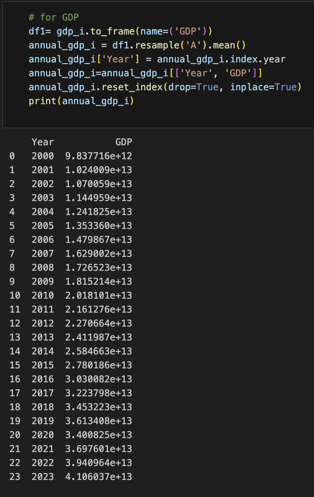
The data is then merged to create a comparible dataset
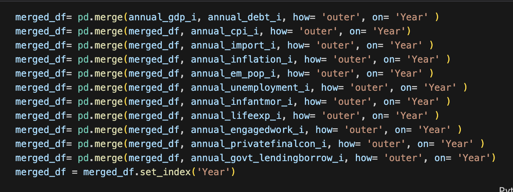
The data is then seen for information and missing values
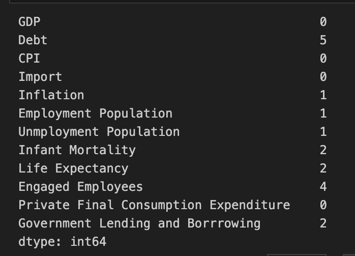
And then for data summary
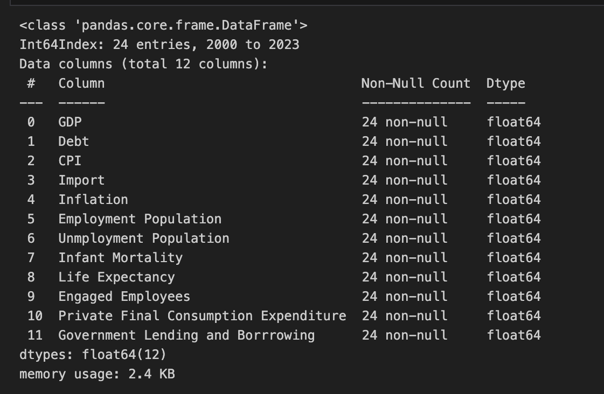
To access to code: Click here.
To access the raw data: Click here.
QUANTITATIVE DATA: wbstats API - R
Using the FREDAPI, the data has been extracted.
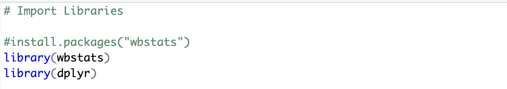
Next the data has been obtained using the following series id. These have been obtained by looking at the wbstats API under 'India' category.
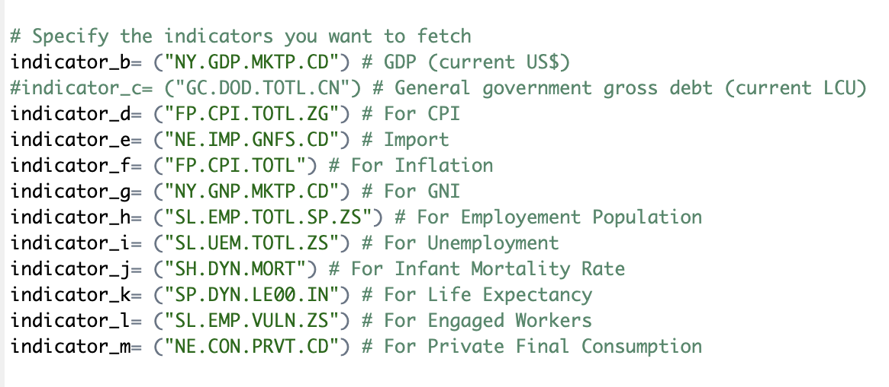
The final output of the data is shown below.
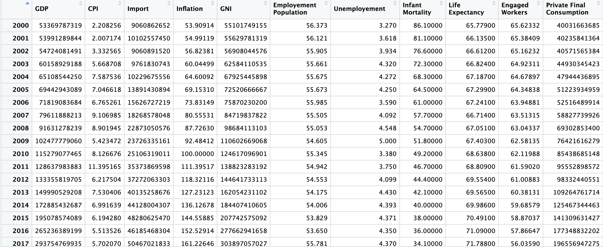
To access to code: Click here.
To access the raw data: Click here.
TEXT DATA: NEWSAPI - Python
Using the NEWSAPI, the textual data has been extracted. We see the import of libraries with the relevent API key.
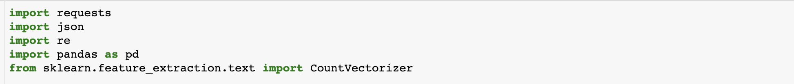
After the textual data has been extracted, the topics of 'Macroeconomic' and 'Fiscal Policy' have been chosen. The code is shown below.
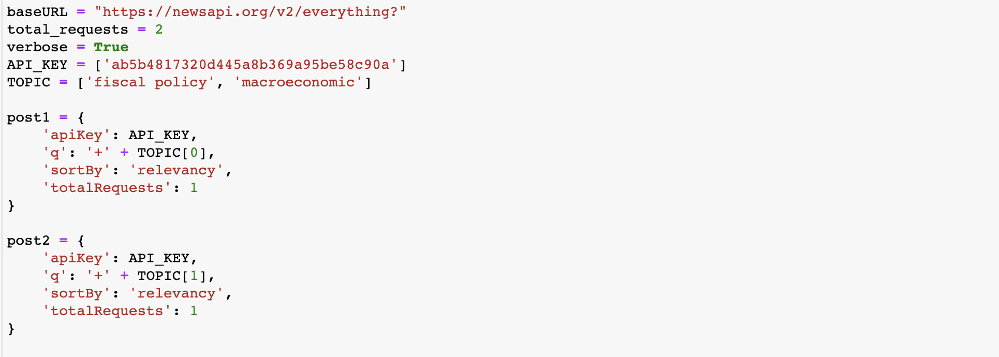
Before pre-processing, the data looks like this in json format.
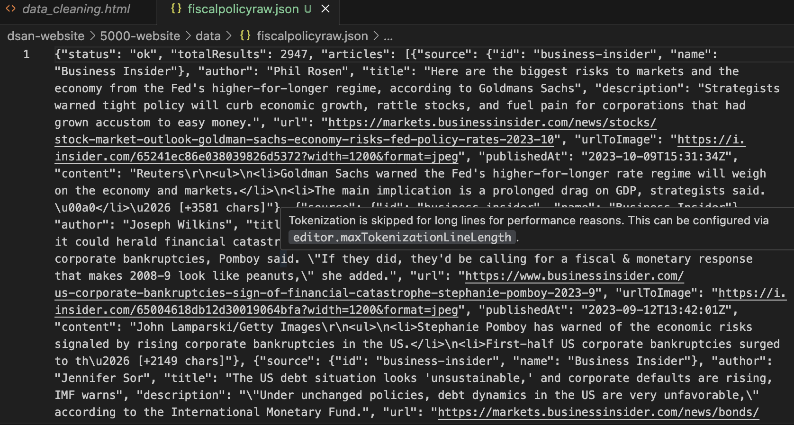
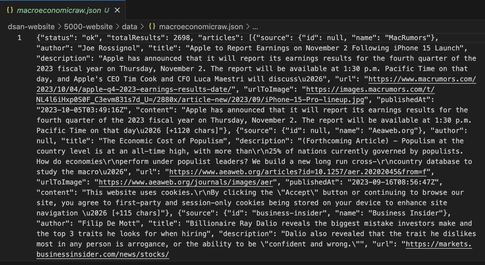
The final data looks like this
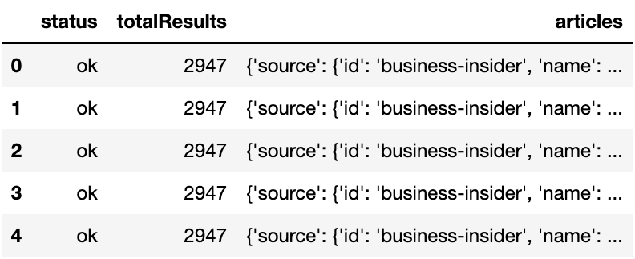
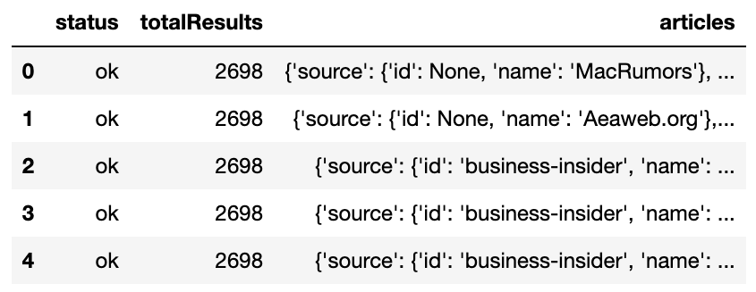
To access to code: Click here.
To access the raw data: Click here.